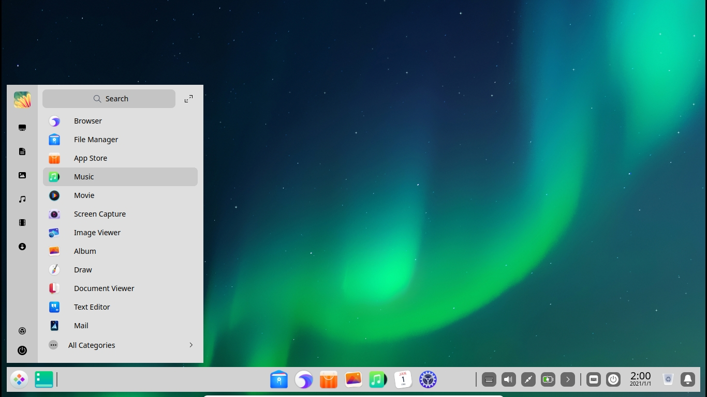
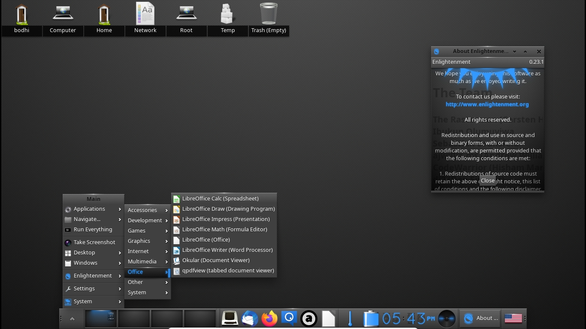
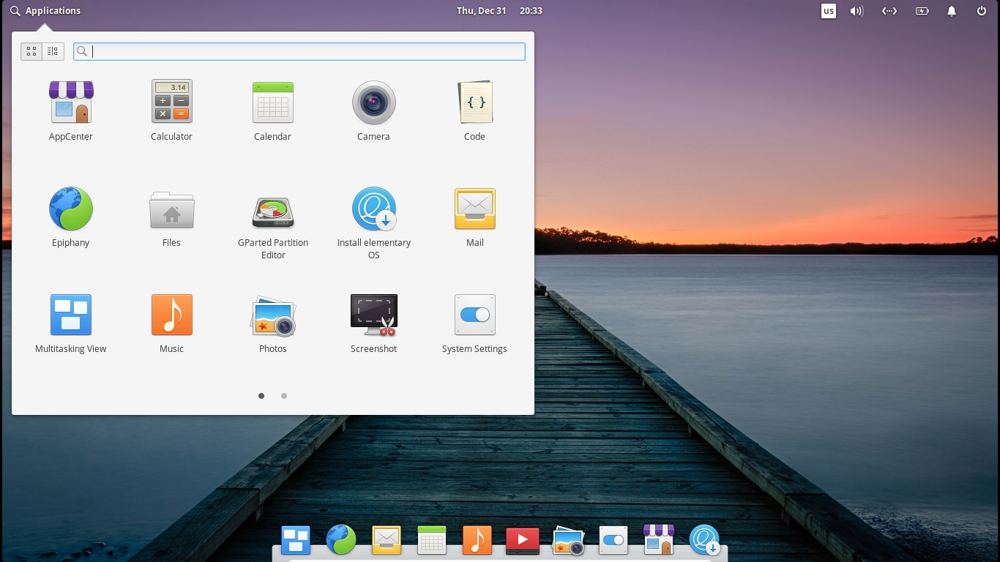

Содержание
Linux — семейство Unix-подобных операционных систем на базе ядра Linux, включающих тот или иной набор утилит и программ проекта GNU, и, возможно, другие компоненты. Как и ядро Linux, системы на его основе, как правило, создаются и распространяются в соответствии с моделью разработки свободного и открытого программного обеспечения. Linux-системы распространяются в основном бесплатно в виде различных дистрибутивов — в форме, готовой для установки и удобной для сопровождения и обновлений, — и имеющих свой набор системных и прикладных компонентов, как свободных, так и проприетарных (собственнических).
Появившись как решения вокруг созданного в начале 1990-х годов ядра, уже с начала 2000-х годов системы Linux являются основными для суперкомпьютеров и серверов, расширяется применение их для встраиваемых систем и мобильных устройств, некоторое распространение системы получили и для персональных компьютеров
Семейство систем, включающих в качестве компонентов основные программы проекта GNU, такие как bash, gcc, glibc, coreutils, GNOME и ряд других, иногда идентифицируется как GNU/Linux. Так как традиционно большинство систем было именно таким, под «Linux» обычно подразумеваются именно они; притом существует спор об именовании GNU/Linux. Существует проект стандартизации внутренней структуры Linux-систем — Linux Standard Base, часть документов которого зарегистрирована в качестве стандартов ISO; но далеко не все системы сертифицируются по нему, и в целом для Linux-систем не существует какой-либо общепризнанной стандартной комплектации или формальных условий включения в семейство. Однако есть ряд систем на базе ядра Linux, но не имеющих в основе зависимости от программ GNU, которые поэтому "GNU/Linux" не называют, в частности, таковы мобильные системы Android и FirefoxOS.
История

В 1991 году во время обучения в Хельсинкском университете Линус Торвальдс заинтересовался операционными системами и был разочарован лицензией MINIX, которая ограничивала её использование только образовательными целями (что исключало любое коммерческое использование), вследствие чего начал работать над своей собственной операционной системой, которая в итоге стала Linux.
Торвальдс начал разработку ядра Linux на MINIX, и перенёс на него ряд приложений. Позже, когда Linux достиг определённой зрелости, появилась возможность продолжать разработку уже на базе самого Linux. Приложения GNU вскоре заменили приложения MINIX, так как код GNU, находящийся в свободном доступе, был более удобен для применения в молодой операционной системе (исходный код под лицензией GNU GPL может быть использован в других проектах, если они также выпускаются под той же или совместимой лицензией, для того чтобы сделать Linux доступным для коммерческого использования, Торвальдс начал переходить от своей первоначальной лицензии на GNU GPL). Разработчики работали над полной интеграцией компонентов GNU с Linux с целью создания полнофункциональной и свободной операционной системы (Linux).
Модель
Linux-системы реализуются на модульных принципах, стандартах и соглашениях, заложенных в Unix в течение 1970-х и 1980-х годов. Такая система использует монолитное ядро, которое управляет процессами, сетевыми функциями, периферией и доступом к файловой системе. Драйверы устройств либо интегрированы непосредственно в ядро, либо добавлены в виде модулей, загружаемых во время работы системы.
Отдельные программы, взаимодействуя с ядром, обеспечивают функции системы более высокого уровня. Например, пользовательские компоненты GNU являются важной частью большинства Линукс-систем, включающей в себя наиболее распространённые реализации библиотеки языка Си, популярных оболочек операционной системы, и многих других общих инструментов Unix, которые выполняют многие основные задачи операционной системы.
Графический интерфейс пользователя (или GUI) в большинстве систем Linux построен на основе X Window System.
Интерфейс Пользователя
В Linux-системах пользователи работают через интерфейс командной строки (CLI), графический интерфейс пользователя (GUI), или, в случае встраиваемых систем, через элементы управления соответствующих аппаратных средств. Настольные системы, как правило, имеют графический пользовательский интерфейс, в котором командная строка доступна через окно эмулятора терминала или в отдельной виртуальной консоли. Большинство низкоуровневых компонентов Линукс, включая пользовательские компоненты GNU, использует исключительно командную строку. Командная строка особенно хорошо подходит для автоматизации повторяющихся или отложенных задач, а также предоставляет очень простой механизм межпроцессного взаимодействия. Программа графического эмулятора терминала часто используется для доступа к командной строке с рабочего стола Linux.
Дистрибутивы, специально разработанные для серверов, могут использовать командную строку в качестве единственного интерфейса. На настольных системах наибольшей популярностью пользуются пользовательские интерфейсы, основанные на таких средах рабочего стола как KDE Plasma Desktop, GNOME и Xfce, хотя также существует целый ряд других пользовательских интерфейсов. Самые популярные пользовательские интерфейсы основаны на X Window System, которая предоставляет прозрачность сети и позволяет графическим приложениям, работающим на одном компьютере, отображаться на другом компьютере, на котором пользователь может взаимодействовать с ними.
FVWM, Enlightenment и Window Maker — простые менеджеры окон X Window System, которые предоставляют окружение рабочего стола с минимальной функциональностью. Оконный менеджер предоставляет средства для управления размещением и внешним видом отдельных окон приложений, а также взаимодействует с X Window System. Окружение рабочего стола включает в себя оконные менеджеры как часть стандартной установки: Mutter для GNOME c 2011 года, KWin для KDE c 2000 года, Xfwm для Xfce с 1998 года, хотя пользователь при желании может выбрать другой менеджер окон.
Реализация
Linux работает на множестве процессоров различных архитектур, таких как x86, x86-64, PowerPC, ARM, RISC-V, Alpha AXP, SPARC, Motorola 680x0, SuperH, IBM System/390, MIPS, PA-RISC, AXIS CRIS, Renesas M32R, Atmel AVR32, Renesas H8/300, NEC V850, Tensilica Xtensa, «Эльбрус» и многих других.
В отличие от коммерческих систем, таких как Windows или macOS, Linux не имеет географического центра разработки. Нет и организации, которая владела бы этой системой. Linux — результат работы тысяч проектов. Некоторые из этих проектов централизованы, некоторые сосредоточены в фирмах. Многие проекты объединяют хакеров со всего света, которые знакомы только по переписке. Создать свой проект или присоединиться к уже существующему может любой и, в случае успеха, результаты работы станут известны миллионам пользователей. Пользователи принимают участие в тестировании свободных программ, общаются с разработчиками напрямую, что позволяет быстро находить и исправлять ошибки и реализовывать новые возможности.
С другой стороны, открытый код значительно снижает себестоимость разработки закрытых систем для Linux и позволяет снизить цену решения для пользователя, в результате Linux стала платформой, часто рекомендуемой для таких продуктов, как Oracle Database, DB2, Informix, Adaptive Server Enterprise, SAP R/3, Domino.
Программирование в Linux
GNU Compiler Collection (GCC) является стандартным семейством компиляторов для большинства Linux-систем. Кроме того, GCC обеспечивает front-end для C, C++, Java. Большинство дистрибутивов включает в себя установленные интерпретаторы Bash, Perl, Python и других сценарных языков.
Существует ряд сред для разработки (IDE): KDevelop, Eclipse, NetBeans, Lazarus, IntelliJ IDEA, Code::Blocks и другие; также доступны и традиционные текстовые редакторы, такие как Emacs и Vim.
Двумя распространёнными библиотеками визуальных элементов для создания графических интерфейсов пользователя являются Qt и GTK+.
Применение
В апреле 2011 года семейство операционных систем на базе ядра Linux — четвёртое по популярности в мире среди клиентов Всемирной паутины (включая мобильные телефоны). По разным данным, их популярность составляет от 1,5 до 5%. На рынке веб-серверов доля Linux порядка 32% (64,1% указаны как доля Unix). Linux используется во всех входящих в список Top500 суперкомпьютерах планеты.
По состоянию на середину 2010-х годов системы Linux лидируют на рынках серверов (60 %), являются превалирующими в дата-центрах предприятий и организаций (согласно Linux Foundation), занимают половину рынка встраиваемых систем, имеют значительную долю рынка нетбуков (32 % на 2009 год). На рынке персональных компьютеров Linux стабильно занимает 3-е место (по разным данным, от 1 до 5 %). Согласно исследованию Goldman Sachs, в целом, рыночная доля Linux среди электронных устройств составляет около 42%.
Облачные сервисы наподобие DigitalOcean предоставляют выделенные серверы разных видов Linux: Ubuntu, Debian, centOS.
Дистрибутивы Linux используют:
- Серверы, рабочие станции и суперкомпьютеры
- Игровые приставки
- Встраиваемые системы
- Госструктуры
- В роли настольной операционной системы
Дистрибутивы Linux
Большинство пользователей для установки Linux используют дистрибутивы, включающие не только набор программ, но и решающие ряд задач по обслуживанию, объединённых едиными системами установки, управления и обновления пакетов, настройки и поддержки.
Самые распространённые в мире дистрибутивы (2017): Linux Mint, Ubuntu, Debian, Mageia, Fedora, OpenSUSE, ArchLinux, CentOS, PCLinuxOS, Slackware, Gentoo. Многие из дистрибутивов связаны друг с другом и в той или иной степени совместимы, в частности, Ubuntu основан на Debian, а дистрибутивы Mint основаны как на Ubuntu, так и Debian (LMDE) и полностью с ними совместимы, но при этом включают дополнительно поддержку по умолчанию Java, Adobe Flash и некоторых других проприетарных компонентов, а CentOS основан на исходных текстах коммерческого дистрибутива Red Hat Enterprise Linux (доступного в бинарной сборке только платным подписчикам) и при этом полностью бинарно совместимый с ним.
Для многих упомянутых дистрибутивов характерна форма выпуска LiveCD, когда ОС запускается без установки с оптического диска или флеш-накопителя. Из этого состояния можно поставить систему стационарно либо работать таким образом до выключения компьютера — для этих целей существуют обособленные «мобильные» дистрибутивы, наиболее популярен из которых Knoppix. Дистрибутив Puppy Linux предназначен специально для устаревших и маломощных компьютеров.
Отдельный класс дистрибутивов — предполагающие самостоятельную сборку всех или части компонентов из исходных кодов, предназначенные для пользователей, заинтересованных в изучении устройства Linux, среди таковых — LFS, Gentoo, CRUX.
Существуют также дистрибутивы с региональной спецификой, например, в России создаются нацеленные в основном на внутренний рынок дистрибутивы ROSA, ALT Linux, ASPLinux (закрыт в 2011 году), НауЛинукс, Calculate Linux, Runtu, Rosinka, РЕД ОС, Astra Linux. В ФРГ существовал государственный региональный дистрибутив LiMux — «Мюнхенский Линукс».
Ссылки
- Linux Ядро: kernel.org
- Github: github.com/torvalds/linux